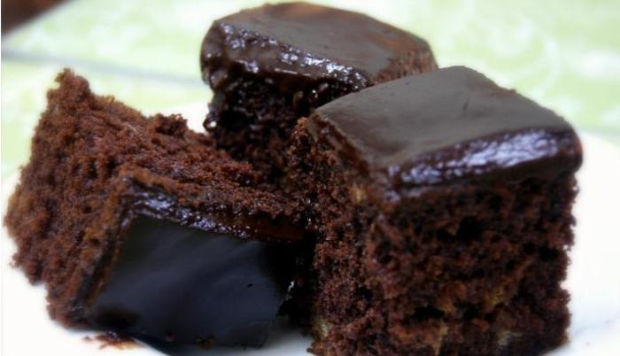

Kue Coklat

Bahan-bahan:
 175 gr tepung terigu
175 gr tepung terigu
Tepung terigu adalah bubuk yang terbuat dari penggilingan gandum yang digunakan untuk konsumsi manusia. Varietas gandum disebut "lunak" atau "lemah" jika kandungan gluten rendah, dan disebut "keras" atau "kuat" jika mereka memiliki konten gluten tinggi.
 100 gr margarin, cairkan
100 gr margarin, cairkan
Margarin ialah mentega buatan. Bisa dibuat dari minyak nabati, atau minyak hewani. Bisa juga mengandung susu saringan, garam dan pengemulsi. Margarin mengandung lebih sedikit lemak daripada mentega, sehingga margarin banyak digunakan sebagai pengganti mentega. Ada juga margarin rendah kalori, yang mengandung lemak lebih sedikit. Margarin merupakan produk turunan dari minyak kelapa sawit dan mengandung lemak tak jenuh yang aman bagi kesehatan. Minyak kelapa sawit yang berbentuk cair terlebih dahulu melewati proses penyuntikan hidrogen hingga padat. Dulunya, cara pembuatan margarin sempat menuai masalah karena disebut-sebut mengandung trans fat yang berbahaya bagi tubuh karena penggunaan zat hidrogen tersebut. Namun seiring kemajuan teknologi, kini margarin tidak lagi mengandung trans fat. “Pemecahan struktur penggunaan zat hidrogen harus sampai tuntas untuk menghilangkan zat berbahaya tersebut,” jelas Isti. Memilki kandungan air sekitar 16%, margarin memiliki titik leleh yang cukup tinggi sekitar 37 - 42° C. Hal tersebut yang membuat margarin aman disimpan dalam suhu ruang tanpa harus takut meleleh. Karena berbahan dasar minyak kelapa sawit, margarin memiliki warna kuning lebih cerah dibanding mentega yang biasanya kuning pucat. Tidak adanya aroma susu layaknya mentega menjadi salah satu kekurangan margarin. Sering kali para produsen menyiasati kekurangan tersebut dengan mencampurkannya dengan mentega hanya untuk mendapatkan aroma khasnya.
 6 butir telur
6 butir telur
Telur adalah salah satu bahan makanan hewani yang dikonsumsi selain daging, ikan dan susu. Umumnya telur yang dikonsumsi berasal dari jenis-jenis burung, seperti ayam, bebek, dan angsa, akan tetapi telur-telur yang lebih kecil seperti telur ikan kadang juga digunakan sebagai campuran dalam hidangan..
 25 gr coklat bubuk
25 gr coklat bubuk
Kakao padat adalah sebuah campuran beberapa bahan yang dipadukan setelah mentega kakao disarikan dari biji kakao. Saat dijual sebagai produk akhir, ini juga disebut bubuk kakao atau kakao. Kakao padat adalah bahan utama dari coklat, sirup coklat, dan manisan coklat.
 150 gr gula pasir
150 gr gula pasir
Gula adalah suatu karbohidrat sederhana yang menjadi sumber energi dan komoditas perdagangan utama. Gula paling banyak diperdagangkan dalam bentuk kristal sukrosa padat. Gula digunakan untuk mengubah rasa menjadi manis dan keadaan makanan atau minuman.
 25 ml susu cair
25 ml susu cair
Susu adalah cairan bergizi berwarna putih yang dihasilkan oleh kelenjar susu mamalia, salah satunya manusia. Susu adalah sumber gizi utama bagi bayi sebelum mereka dapat mencerna makanan padat. Susu binatang (biasanya sapi) juga diolah menjadi berbagai produk seperti mentega, yogurt, es krim, keju, susu kental manis, susu bubuk dan lain-lainnya untuk konsumsi manusia.
Bubuk pengembang (bahasa Inggris: baking powder) adalah bahan pengembang yang dipakai untuk meningkatkan volume dan memperingan tekstur makanan yang dipanggang seperti muffin, bolu, scone, dan biskuit. Bubuk pengembang bekerja dengan melepaskan gas karbon dioksida ke dalam adonan melalui sebuah reaksi asam-basa, menyebabkan gelembung-gelembung di dalam adonan yang masih basah, dan ketika dipanaskan adonan memuai; ketika adonan matang, gelembung-gelembung itu terperangkap hingga menyebabkan kue menjadi naik dan ringan. Bubuk pengembang dipakai untuk menggantikan ragi ketika rasa fermentasi tidak diingini pada makanan yang dihasilkan, atau ketika adonan kurang memiliki sifat elastis untuk menahan gelembung-gelembung gas lebih dari beberapa menit. Roti yang dibuat dengan memakai bahan pengembang kimia disebut roti cepat.
Kakao padat adalah sebuah campuran beberapa bahan yang dipadukan setelah mentega kakao disarikan dari biji kakao. Saat dijual sebagai produk akhir, ini juga disebut bubuk kakao atau kakao. Kakao padat adalah bahan utama dari coklat, sirup coklat, dan manisan coklat. Sirup cokelat adalah sebuah penyedap rasa manis rasa coklat. Sirup tersebut sering dipakai sebagai topping atau saus hidangan penutup untuk berbagai hidangan penutup, seperti es krim atau dicampur dengan susu untuk membuat susu cokelat atau dicampur dengan susu dan es krim untuk membuat susu kocok coklat.
 ½ sdm emulsifier
½ sdm emulsifier
Emulsifier atau zat pengemulsi adalah zat untuk membantu menjaga kestabilan emulsi minyak dan air. Umumnya emulsifier merupakan senyawa organik yang memiliki dua gugus, baik yang polar maupun nonpolar sehingga kedua zat tersebut dapat bercampur. Gugus nonpolar emulsifier akan mengikat minyak (partikel minyak dikelilingi) sedangkan air akan terikat kuat oleh gugus polar pengemulsi tersebut. Bagian polar kemudian akan terionisasi menjadi bermuatan negatif, hal ini menyebabkan minyak juga menjadi bermuatan negatif. Partikel minyak kemudian akan tolak-menolak sehingga dua zat yang pada awalnya tidak dapat larut tersebut kemudian menjadi stabil.
Cara Membuat:
- Langkah pertama adalah dengan cara mengocok telur lalu tambahkan gula pasir dan emulsufier hingga adonan mengembang. Jika sudah mengembang maka anda bisa menambahkan terigu, coklat serta baking powder. Aduk hingga rata.
- Langkah berikutnya adalah dengan memberi tambahan susu cair, margarin dan coklat pasta. Masukkan sedikit demi sedikit sembari diaduk.
- Tuang adonan ke dalam loyang yang sudah diolesi margarin sebelumnya dan beri alas kertas roti.
- Selanjutnya, panggang dalam oven dengan suhu 180 derajat celcius kurang lebih sekitar 30 menit lalu angkat.
- Untuk membuat bahan olesan, anda bisa mencampur mentega putih, coklat bubuk serta tepung gula. Kocok hingga bahan- bahan campuran tersebut halus dan lembut. Oleskan pada kue.